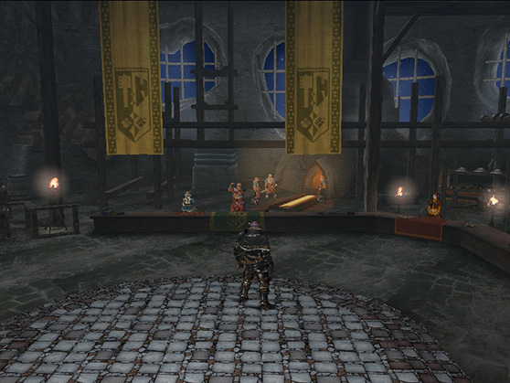

各施設の紹介

武具工房では、武器や防具の購入、及び生産と強化が行なえます。また、武具に取り付けることでスキルポイントを増やすことができる装飾品を生産することも可能です。さらにアイテムと装備品を保管できる「追加倉庫」や、素材やアイテム、ゼニーなどを渡して別のアイテムとの交換が行なえる「ハリセンネコのイチオシ」も使用することができます。
武具工房では、武器や防具の購入、及び生産と強化が行なえます。また、武具に取り付けることでスキルポイントを増やすことができる装飾品を生産することも可能です。さらにアイテムと装備品を保管できる「追加倉庫」や、素材やアイテム、ゼニーなどを渡して別のアイテムとの交換が行なえる「ハリセンネコのイチオシ」も使用することができます。

追加倉庫はアイテムと装備品それぞれ1000枠分保管できる倉庫です。追加倉庫からアイテムを直接出し入れすることはできませんが、マイハウスにある「アイテムボックス」や「追加アイテムボックス」、「装備ボックス」から追加倉庫にアイテムを移すことができます。
「追加倉庫」は12時間以内に、定められた一定回数までしか使用できず、利用するためにはハンターライフコースに登録している必要があります。
また、一定回数以上利用しようとすると、次回使用できるようになる時刻が表示されます。

ハリセンネコのイチオシは、武具工房内などにいるハリセンネコに話しかけることによってできるくじです。素材やアイテム、ゼニー、小判などを一定数消費して抽選を行ない、特定の確率で別のアイテムや素材、武器等を得ることができます。
また、フロンティアポイント(FP)を使用して、素材や生産券などと交換も可能です。
ハリセンネコはイチオシがある期間のみ対象箇所に出現します。
特定の期間だけ可能な、素材やアイテムを消費して引くことのできるくじです。くじには様々な種類があり、１日に１回しか引けない代わりに通常よりもお得な報酬が用意されている「１日１回限定くじ」などがあります。
きんぴか小判Ｇ、おためし小判Ｇを消費して、引くことのできるくじです。引いた数に応じて、確定でもらえるアイテム・素材が用意されています。また、FPが入手可能です。詳細はこちらをご確認ください。
特定の期間だけ可能な、素材やアイテムを消費して引くことのできるくじです。引いた回数に応じて、確定でもらえるアイテム・素材が用意されています。また、FPが用意されている場合もあります。
各種ステップアップくじで入手したアイテムや素材が保管されております。報酬を受け取る際にはここを選択する必要があります。
消費することで武具の生産券などと交換可能なフロンティアポイント(FP)の項目です。[フロンティアポイント]-[ポイントで交換]でほしいアイテムとの交換が行なえます。[フロンティアポイント]-[ポイントを取得]を選択すると、特定の素材・アイテムでFPの取得が可能です。
メゼポルタ広場にいるガイドのメニューと同じで、「イベント報酬の受取」や「アイテム販売商品の受取」などができます。
くじの概要を確認できます。
MHF-Ｚチームイチオシの情報が確認できます。
「ハリセンネコのイチオシ」で行なうことのできるくじには、様々な種類があります。期間によって行なうことのできるくじが異なりますので、公式メンバーサイトのお知らせなどでご確認ください。


{kind=link}
{kind=link}
{kind=link}
{kind=link}
{kind=link}
{kind=link}
{kind=link}
{kind=link}
{kind=link}
{kind=link}
{kind=link}
{kind=link}